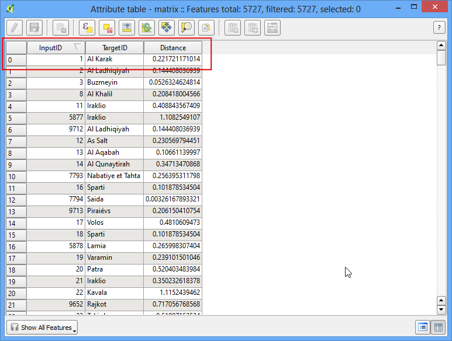
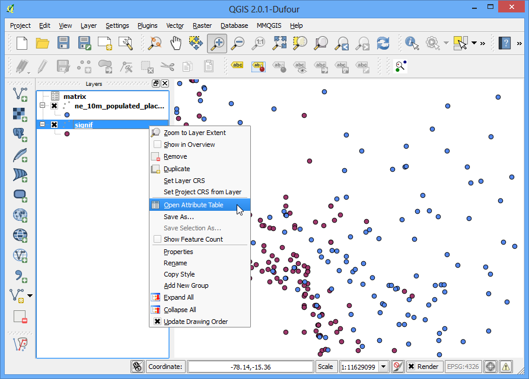

Nearest Neighbor Ανάλυση
[ Download PDF A4 Letter ]
Τα GIS είναι πολύ χρήσιμα στην ανάλυση χωρικών σχέσεων μεταξύ χαρακτηριστικών. Μια τέτοια ανάλυση είναι η εύρεση ποια χαρακτηριστικά βρίσκονται πλησιέστερα σε ένα δεδομένο χαρακτηριστικό. Το QGIS έχει ένα εργαλείο το οποίο ονομάζεται Distance Matrix το οποίο βοηθάει σε μια τέτοια ανάλυση. Σε αυτό το tutorial, θα χρησιμοποιήσουμε 2 σύνολα δεδομένων και θα βρούμε ποια σημεία από το ένα στρώμα είναι πιο κοντά σε ποια σημεία του άλλου στρώματος.
Επισκόπηση του έργου
Λαμβάνοντας υπόψη τις τοποθεσίες όλων των γνωστών σημαντικών σεισμών, βρείτε το πλησιέστερο πυκνοκατοικημένο μέρος για κάθε τοποθεσία όπου συνέβη ο σεισμός.
Άλλες δεξιότητες που θα μάθετε
Διαδικασία
Ανοίξτε και περιηγηθείτε στο ληφθέν signif.txt αρχείο.

Δεδομένου ότι αυτό είναι ένα tab-delimited file , επιλέξτε Tab as the File format. Το X field and Y field would be auto-populated. Κάνετε κλικ στο OK.
Note
Μπορεί να δείτε κάποια μηνύματα σφάλματος όπως το QGIS προσπαθεί να εισάγει το αρχείο. Αυτά είναι έγκυρα λάθη και μερικές γραμμές από το αρχείο δεν θα πρέπει να εισάγονται. Μπορείτε να αγνοήσετε τα σφάλματα για τους σκοπούς αυτού του tutorial.

Καθώς το σύνολο δεδομένων σεισμών έχει συντεταγμένες γεωγραφικού πλάτους/μήκους, επιλέξτε WGS 84 EPSG:436 ως CRS Coordinate Reference System Selector στο παράθυρο διαλόγου.

Το στρώμα σημείου σεισμού θα φορτωθεί και θα εμφανιστεί στο QGIS. Ας ανοίξουμε επίσης το στρώμα Populated Places. Πηγαίνετε στο .

Αναζητήστε το ne_10m_populated_places_simple.zip αρχείο και κάντε κλικ Open. Select the ne_10m_populated_places_simple.shp ως στρώμα στο Select layers to add... παράθυρο διαλόγου.

Κάντε zoum και περιηγηθείτε και στα δυο σύνολα δεδομένων. Κάθε μοβ σημείο αντιπροσωπεύει την τοποθεσία ενός σημαντικού σεισμού και τα μπλε σημεία αντιπροσωπεύουν την τοποθεσία κατοικημένων περιοχών. Χρειαζόμαστε έναν τρόπο για να βρούμε το κοντινότερο σημείο από το στρώμα με τις κατοικημένες περιοχές΄για κάθε ένα από τα σημεία στο στρώμα των σεισμών.

Πηγαίνετε στο .

Εδώ επιλέξτε το στρώμα signif ως το Input point layer και τις κατοικημένες περιοχές ne_10m_populated_places_simple ως το target layer. Θα χρειαστεί επίσης να επιλέξετε a unique field για κάθε ένα από αυτά τα στρώματα τα οποία είναι το πως εμφανίζονται τα αποτελέσματα σας. Σε αυτήν την ανάλυση, ψάχνουμε να βρούμε μόνο 1 πλησιέστερο σημείο, επομένως επιλέξτε το Use only the nearest(k) target points, και πληκτρολογήστε 1. Δώστε ένα όνομα στο αρχείο που θα προκύψει matrix.csv, και επιλέξτε OK.
Note
Κάτι που πρέπει να σημειωθεί είναι πως μπορείτε να πραγματοποιήσετε την ανάλυση με μόνο 1 στρώμα. Επιλέξτε το ίδιο στρώμα σαν Input και Target. Το αποτέλεσμα θα είναι ο nearest neighbor από το ίδιο στρώμα αντί για ένα διαφορετικό στρώμα όπως έχουμε χρησιμοποιήσει εδώ.

Όταν είναι έτοιμο το αρχείο σας, μπορείτε να το δείτε στο Σημειωματάριο ή σε ένα οποιοδήποτε πρόγραμμα επεξεργασίας κειμένου. Το QGIS μπορεί να εισάγει CSV αρχεία, επομένως θα το προσθέσουμε στο QGIS και θα το δούμε εκεί. Πηγαίνετε στο .

Περιηγηθείτε στο νέο αρχείο matrix.csv που μόλις δημιουργήθηκε. Δεδομένου ότι αυτό το αρχείο είναι στήλες κειμένου, επιλέξτε No geometry (attribute only table) από το Geometry definition. Επιλέξτε OK.

Θα παρατηρήσετε ότι το CSV αρχείο έχει φορτωθεί ως πίνακας. Κάντε δεξί-κλικ στο επίπεδο του πίνακα και επιλέξτε Open Attribute Table.

Τώρα θα είστε σε θέση να δείτε τα περιεχόμενα των αποτελεσμάτων μας. Το πεδίο InputID περιέχει το όνομα του πεδίου από το στρώμα του Σεισμού. Το πεδίο TargetID περιέχει τα περιεχόμενα από το στρώμα με τις Κατοικημένες Περιοχές ήταν πλησιέστερα στο σημείο του σεισμού. Το πεδίο Distance είναι η απόσταση των 2 σημείων.
Note
Να θυμάστε ότι ο υπολογισμός της distance θα γίνει με τη χρήση του Συστήματος Αναφοράς Συντεταγμένων του στρώματος. Εδώ η απόσταση θα είναι σε μονάδες decimal degrees επειδή το στρώμα των πηγών συντεταγμένων είναι σε βαθμούς. Εάν θέλετε την απόσταση σε μέτρα, σχεδιάστε τα στρώματα ξανά πριν από την εκτέλεση του εργαλείου.

Αυτό είναι πολύ κοντά στο αποτέλεσμα που ψάχνουμε. Για ορισμένους χρήστες, αυτός ο πίνακας θα ήταν επαρκής. Ωστόσο, μπορούμε επίσης να ενσωματώσουμε αυτά τα αποτελέσματα στο αρχικό στρώμα Σεισμού χρησιμοποιώντας το Table Join. Κάντε δεξί-κλικ στο στρώμα σεισμού και επιλέξτε Properties.

Πηγαίνετε στην καρτέλα Joins και κάντε κλικ στο κουμπί +

Θέλουμε να ενώσουμε τα δεδομένα από τα αποτελέσματα της ανάλυσης μας (matrix.csv) σε αυτό το στρώμα. Πρέπει να επιλέξουμε ένα πεδίο από το κάθε ένα από τα στρώματα που έχει τις ίδιες τιμές. Επιλέξτε τα πεδία όπως φαίνεται παρακάτω.

Θα παρατηρήσετε να εμφανίζεται η ένωση στην καρτέλα Joins tab. Κάντε κλικ στο OK.

Τώρα ανοίξτε τον πίνακα χαρακτηριστικών του στρώματος Σεισμού κάνοντας δεξί-κλικ και επιλέγοντας Open Attribute Table.

Θα δείτε ότι για κάθε χαρακτηριστικό Σεισμού, έχουμε ένα χαρακτηριστικό το οποίο είναι η nearest neighbor (πλησιέστερη κατοικημένη περιοχή) και η απόσταση από τη nearest neighbor.